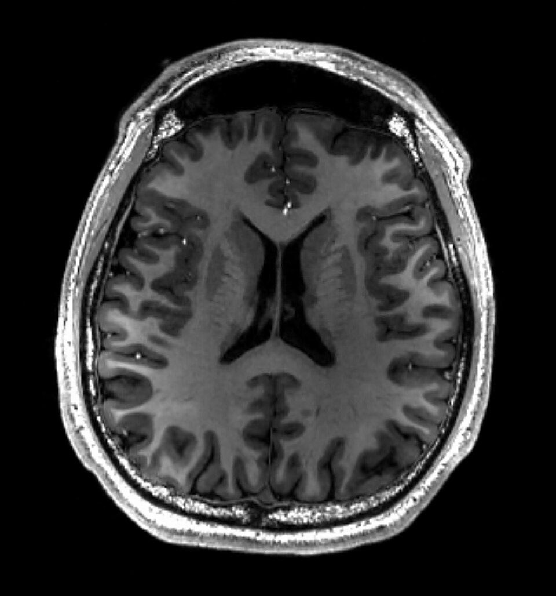

Información divulgativa. No sustituye la valoración de un profesional sanitario. Ante síntomas neurológicos bruscos (boca torcida, debilidad de un lado, dificultad para hablar) llama al 112.


Qué es
La enfermedad de Creutzfeldt-Jakob (ECJ) es la enfermedad por priones más frecuente en humanos. Los priones son formas mal plegadas de una proteína normal del cerebro, la proteína priónica, que tienen la capacidad de transformar a las proteínas sanas en anómalas, en una reacción en cadena. Se acumulan, destruyen neuronas y dejan el cerebro con un aspecto esponjoso (encefalopatía espongiforme).
Es una enfermedad rara: 1-2 casos por millón de habitantes y año en todo el mundo, lo que supone unos 70-100 casos al año en España. Es siempre mortal, y avanza muy deprisa.
Tipos
- Esporádica (85 %): aparece sin causa conocida, hacia los 60-70 años. Se cree que la proteína se pliega mal por azar.
- Genética o familiar (10-15 %): por mutaciones en el gen PRNP. Incluye también el insomnio familiar letal y el síndrome de Gerstmann-Sträussler-Scheinker.
- Adquirida (menos del 1 %):
- Iatrogénica: transmitida por trasplantes de duramadre o de córnea, hormona del crecimiento extraída de cadáveres o instrumental neuroquirúrgico contaminado; hoy es excepcional.
- Variante de la ECJ: relacionada con el consumo de carne de vacas con encefalopatía espongiforme bovina («mal de las vacas locas») en los años 80 y 90, sobre todo en el Reino Unido. Afectaba a personas jóvenes. Gracias a las medidas de control de la cadena alimentaria, ha prácticamente desaparecido.
Síntomas
- Deterioro cognitivo muy rápido: en semanas o pocos meses, pérdida de memoria, confusión, cambios de conducta.
- Mioclonías: sacudidas musculares bruscas, a menudo provocadas por un ruido o un roce.
- Ataxia: inestabilidad y falta de coordinación.
- Alteraciones visuales, rigidez, movimientos anormales.
- Evoluciona a un estado de mutismo e inmovilidad. La supervivencia media es de 4 a 6 meses desde los primeros síntomas.
Diagnóstico
- Resonancia magnética con difusión: alteraciones típicas en la corteza («cintas corticales») y en los ganglios basales.
- Prueba RT-QuIC en el líquido cefalorraquídeo: detecta los priones con una especificidad cercana al 100 %. Ha transformado el diagnóstico.
- Proteínas 14-3-3 y tau en el líquido cefalorraquídeo (ver punción lumbar).
- Electroencefalograma: complejos periódicos característicos.
- Estudio genético del gen PRNP.
Es importante descartar enfermedades tratables que pueden imitarla, como las encefalitis autoinmunes.
Tratamiento
No existe un tratamiento que frene la enfermedad. Se trata de aliviar los síntomas (clonazepam o levetiracetam para las mioclonías) y de ofrecer cuidados paliativos y apoyo a la familia. Se investigan oligonucleótidos antisentido y otras terapias que reducen la proteína priónica, sobre todo para portadores de mutaciones.
No se contagia por el contacto
La ECJ no se transmite por el contacto cotidiano, los besos ni la convivencia. Se toman precauciones especiales con el instrumental quirúrgico y los tejidos. En España existe un registro nacional de vigilancia, coordinado por el Instituto de Salud Carlos III, y es una enfermedad de declaración obligatoria.
Historia · Medicapedia
La historia de esta enfermedad
Cómo se describió, quién la estudió y cómo ha cambiado su tratamiento a lo largo de los siglos, en Medicapedia, nuestra enciclopedia hermana de historia de la medicina.
Fuentes
- Uttley L, et al. Creutzfeldt-Jakob disease: a systematic review of global incidence, prevalence, infectivity, and incubation. Lancet Infect Dis. 2020;20:e2-e10.
- Hermann P, et al. Biomarkers and diagnostic guidelines for sporadic Creutzfeldt-Jakob disease. Lancet Neurol. 2021;20:235-46.
- Mead S, et al. Prion disease. Lancet. 2023;402:1101-13.
- Instituto de Salud Carlos III. Encefalopatías espongiformes transmisibles humanas.